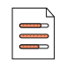

How to become a Caregiver
A caregiver plays a vital role in someone's life, helping them to maintain their independence instead of moving into a care facility or nursing home. Certain skills, such as being compassionate, are vital for being a caretaker. Other skills could include general home maintenance, cooking and cleaning.
While there are no formal education requirements to be a caregiver, you can consider:
- Talking with someone currently in the field to gain insight into the role and local requirements
- Seeking out basic first aid classes. Some caregivers will be required to know CPR and first aid.
- Apply for caregiver jobs. Many caregiver employers train employees after they are hired. You may complete training after gaining employment as a caregiver.
Source: The Bureau of Labor Statistics (BLS)
FeedbackHow to become: Direct Support Professional · Direct Support Professional · Direct Support Professional · Direct Support Professional ·

What skills help Caregivers find jobs?
- Caregiving
- Medication Administration
- Alzheimer's Care
- Home Care
- Medication Administration
- Alzheimer's Care
- Home Care
- Medication Administration
- Time Management
- Home Care
- Alzheimer's Care
- Time Management
Career progression for Caregiver
Education levels for Caregivers
Based on the requirements of Caregiver job openings on Indeed in the United States within the last three years.
Expected salary by experience
Based on the requirements of Caregiver job openings on Indeed in the United States within the last three years.
Common qualifications for Caregivers
- Caregiver Certification
- CNA
- First Aid Certification
- CPR Certification
- Driver's License
- Home Care Aide Certification
- Home Care
- NR
- Time Management
- Time Management
- Alzheimer's Care
- Home Care

Frequently asked questions
Common questions about being a Caregiver
Can someone become a non-medical caregiver?
Yes, a caregiver can be a non-medical caregiver. There are roles that involve companionship and respite care. In these positions, caregivers may be asked to help with personal care, dressing, medication reminders or transportation assistance.
Was this answer helpful?
How can I find help for my family member in our home?
Yes, a caregiver can be a non-medical caregiver. There are roles that involve companionship and respite care. In these positions, caregivers may be asked to help with personal care, dressing, medication reminders or transportation assistance.
Was this answer helpful?
What are the duties and responsibilities of a caregiver?
Yes, a caregiver can be a non-medical caregiver. There are roles that involve companionship and respite care. In these positions, caregivers may be asked to help with personal care, dressing, medication reminders or transportation assistance.
Was this answer helpful?
Are in-home caregivers considered to be self-employed?
Yes, a caregiver can be a non-medical caregiver. There are roles that involve companionship and respite care. In these positions, caregivers may be asked to help with personal care, dressing, medication reminders or transportation assistance.
Was this answer helpful?
Can someone become a non-medical caregiver?
Yes, a caregiver can be a non-medical caregiver. There are roles that involve companionship and respite care. In these positions, caregivers may be asked to help with personal care, dressing, medication reminders or transportation assistance.
Was this answer helpful?
Are in-home caregivers considered to be self-employed?
Yes, a caregiver can be a non-medical caregiver. There are roles that involve companionship and respite care. In these positions, caregivers may be asked to help with personal care, dressing, medication reminders or transportation assistance.
Was this answer helpful?